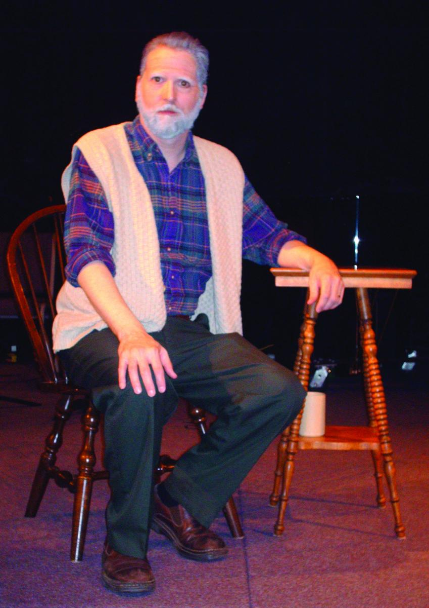

A Christmas Opportunity
Joseph: A Father's Love is a dramatic, 30-minute monolog which can be performed on any size stage by one actor and may include up to three special music numbers.
How old Joseph was when he took Mary as his wife, how long he lived, and the depth of his understanding of Jesus' ministry are all matters of speculation, subjects on which scripture is silent. There's no denying Mary's husband had a unique perspective on the events surrounding Jesus' birth. This play, based primarily on the first few chapters of Luke's and Matthew's gospels, is intended to shed light on the miraculous and profound events recorded there by exploring how Joseph, a man we know little about, may have been affected by them. For this theatrical event, choices have been made to portray the man and the story realistically without contradicting scripture. To further underscore the ordinary man with an extraordinary calling, and to help the audience relate to Joseph as “one of us,” he is dressed in contemporary clothes on a simple, modern set.
As an optional element of the production, songs by Michael Card from The Promise have been selected for the very human perspectives they portray of this very divine history. Unto Us A Child is presented as Mary's declaration of God's plan for the incarnation (female vocalist). Shepherd's Watch, with a few minor changes to the lyrics, tells the incredible impact of that awesome night (male solo or ensemble). In Joseph's Song, an earthly father ponders how to rear a heaven-sent child (male solo, may be the actor portraying Joseph).
The audience finds themselves in the abandoned shop of the aging carpenter who warmly talks about his family, including the oldest son who is embarking on a mission that “will turn the world on its head.” His observations and recollections are filled with poignancy, humor, and awe as he struggles with his role in God's plan. These are some excerpts:
Scene 1: DUSTY SHOP
[Joseph uncovers a small table, neatly crafted, and recognizes it.] This was one of the last pieces Jesus worked on before he went off into the world. He's a fine carpenter. Always been good at making things with his hands. Ever since he was twelve, though — no, I remember it was before that — all along, I suppose, I realized he had a life's calling that would take him far away from a Galilean carpenter's shop. And he knew it too. But as long as he was here in Nazareth, he was by my side, even when the younger boys left home. The good son. Every day, right here, working the wood the same as me. A fast learner, too. I never had to show him how to do anything twice.
Scene 2: THE ENGAGEMENT & ANNUNCIATION
I stood like stone to hear her words: with child. . . . What cruelty was this? Had some youth taken his liberties with her and robbed her of reason too? [incredulous] With child. Unable to face the shame of being violated, of breaking her father's covenant, she believed she had seen — an angel of all things. . . . I was devastated. For days I couldn't sleep. All I could see was my treasure, my Mary, my only love turning her back on me. How can someone betray a loved one so easily? And with a kiss, even! . . . What kind of cruel joke was Jehovah playing on me? I'd waited so long . . . and now, he crushes my hopes and I find myself yoked with a wanton.
Scene 3: BETHLEHEM
After generations of waiting — when it seemed Messiah was more wishful thinking than promised hope — his arrival was at hand. Were we alone to be the witnesses of his coming? When a nation was longing for the consolation of Israel — when men prayed to behold the Messiah before death closed their eyes — when deliverance was on the lips of every Jew, the promise was delivered — not in the splendor of a palace, but in the back of a barn. In blood and water, like every child since Cain, with muffled cries of pain and tears of joy the miracle of birth recurred. Caesar's census would be greater by one. And Immanuel would be realized in the breath of a squalling newborn.
Scene 6: ASTROLOGERS & PROPHETS
As Mary held him for the foreigners to see, they bowed down, right there on the dirt floor, and worshiped him. At first I was alarmed — How could I allow these strangers to blaspheme the Almighty in my own home by bowing down and putting another before the Lord God? Despite the miraculous occurring around me all this time, until that moment I had failed to recognize the fundamental truth of this mystery: the Almighty lay quietly there in my wife's arms — adored by men of the world who had learned of his plan to take on flesh by reading the ancient words of my people and the very stars of heaven.
Arrangements
If you would like to make this part of your Christmas programming, please contact me for more information.